ТОП-5 проектов НКО 2024
Войти
Выйти
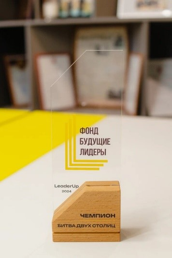
Кейс-турнир «LeaderUp»
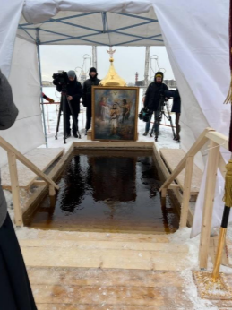
Общегородское праздничное мероприятие 19 января
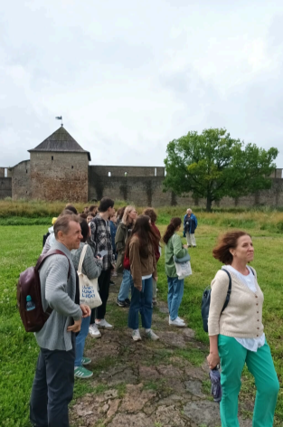
Мы в туризме – 2024
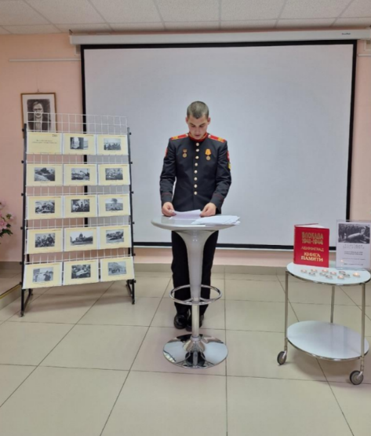
Акция "День памяти жертв блокады 8 сентября"
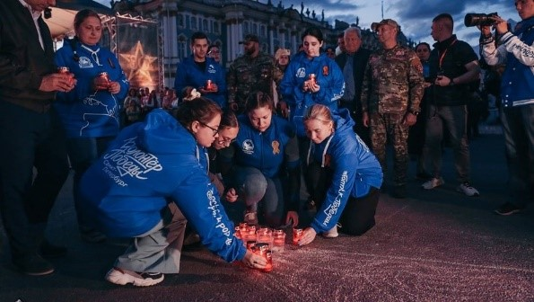
Наши Победы
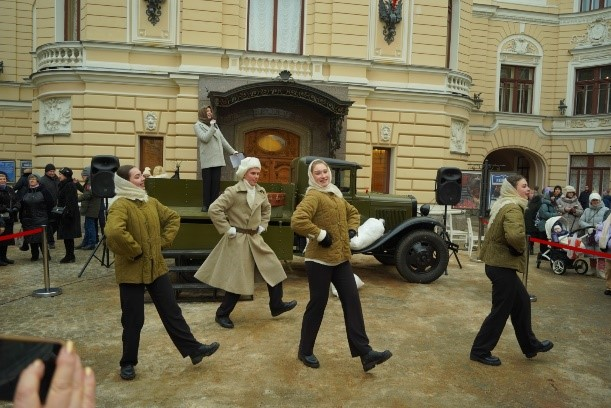
Молодежный патриотический проект «900 дней и ночей»
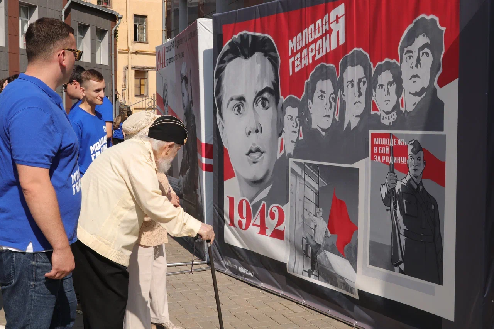
Осколки памяти
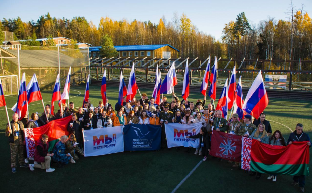
XIV Всероссийская акция памяти павших воинов России «Дни Белых Журавлей»
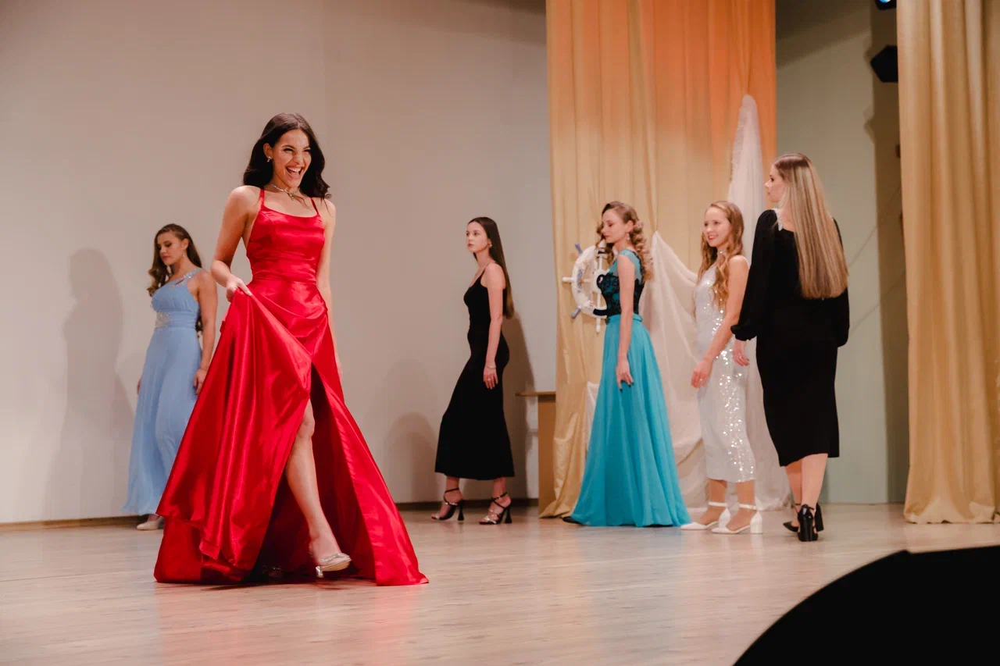
Морской район Морской столицы
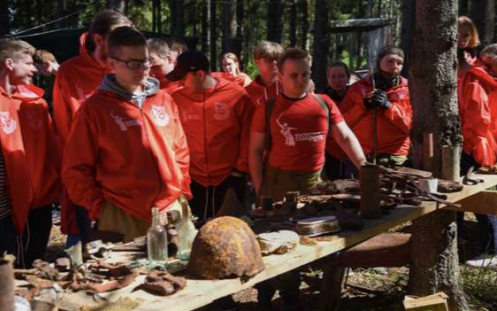
Прорыв не будет забыт
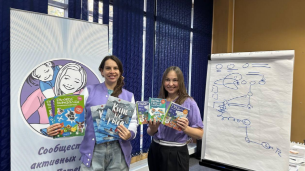
Школа проектного менеджмента для молодых матерей Санкт-Петербурга «Мама на выезде»
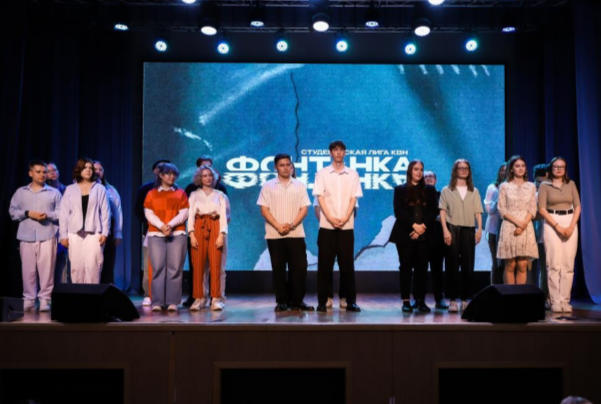
Студенческая лига КВН «Фонтанка»
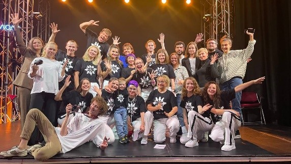
Цикл социально-культурных мероприятий для молодежи с нарушением слуха Санкт-Петербурга, приуроченных 120-летию Санкт-Петербургского общества глухих
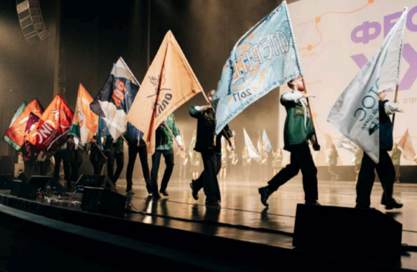
Комплекс мероприятий по развитию студенческих отрядов Санкт-Петербурга #ТрудКрут
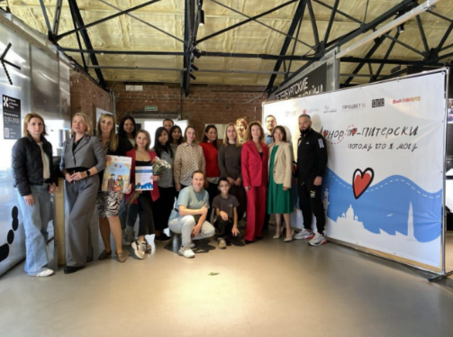
Городская фотовыставка «Донор по-питерски. Взрослые тоже чьи-то дети»
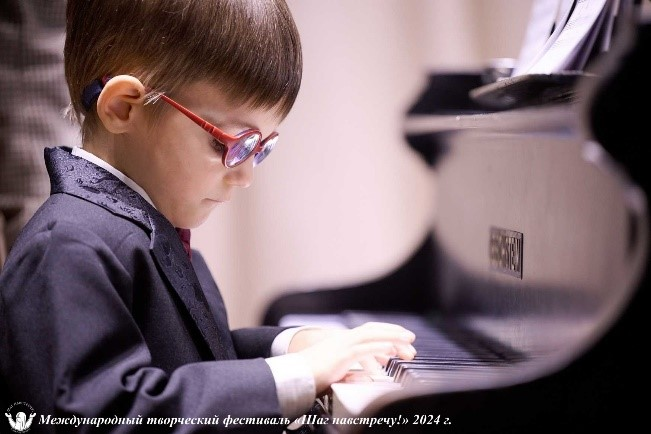
«Вместе можем всё!»
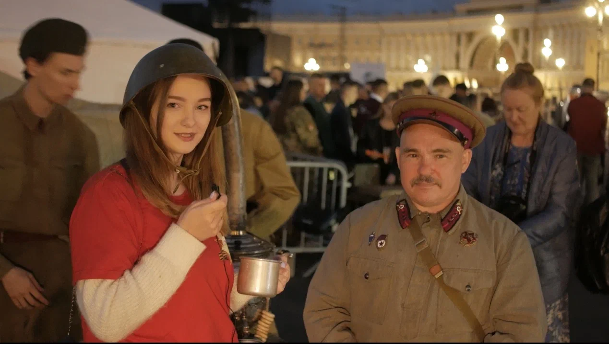
Школа патриотического воспитания на боевых и трудовых традициях старшего поколения
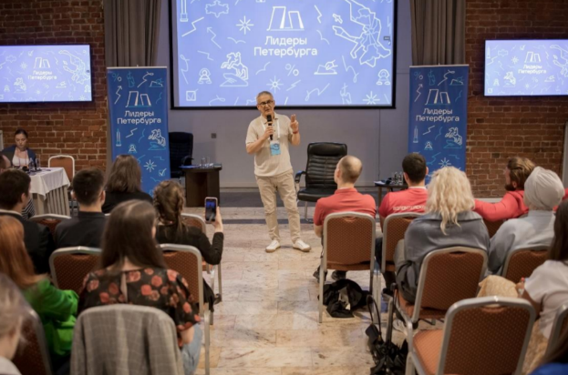
Лидеры Петербурга
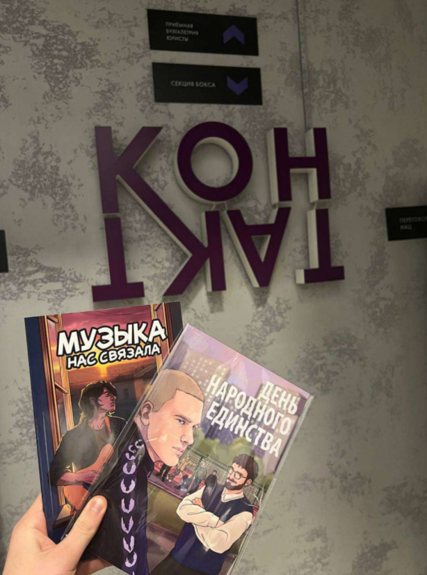
Социальный комикс из серии «На заре»: второй и третий выпуски
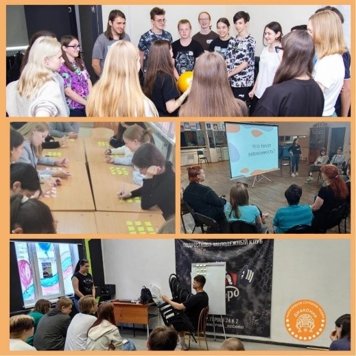
Профилактика употребления наркотических и психоактивных веществ среди молодежи
Посмотреть результат
Подтвердить
Неверный пароль!
Результаты голосования